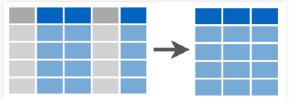
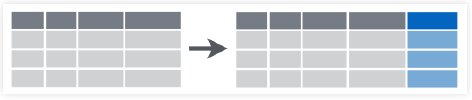
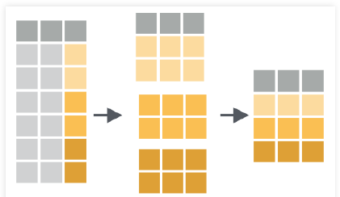
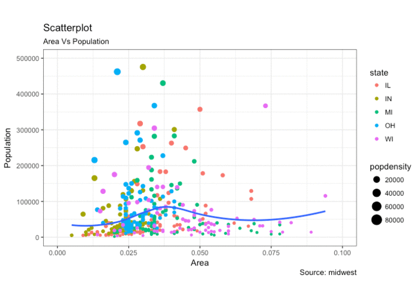
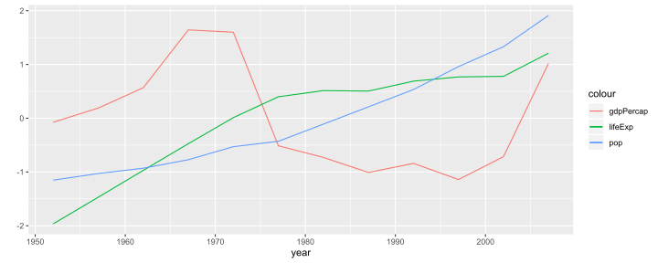
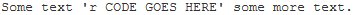

Curso de R
MiDaS
Introduccion a R
Descarga e Instalación
- R, el software computacional, se descarga desde el CRAN. Debes elegir la opción que corresponda con tu sistema operativo.
- Rstudio, el panel de control, se descarga desde Rstudio. Elegir la primera opción, “RStudio Desktop Open Source License”.
- Instalar ambos programas de la forma usual.
- Además existe una versión online, Rstudio Cloud
Interfaz básica de RStudio

Primeras Interacciones con R
R como calculadora aritmética
En R se pueden realizar todas las operaciones aritméticas:
sqrt(2^4 + exp(3)/55 - log(5*8-2)) ## [1] 3.567577Nota: Para correr código desde el editor, utilizar ctrl + enter.
R como calculadora lógica
Además, se pueden realizar operaciones lógicas(&,|), las cuales retornan como resultado TRUE o FALSE:
38 >= 15## [1] TRUE3 < 5 & 6 < 5## [1] FALSE3 < 5 | 6 < 5 ## [1] TRUEObjetos básicos de R
En R podemos guardar objetos utilizando las asignación ‘<-’ o, en su defecto, ‘=’.
a <- 20 # Valor numérico
b = 3^2
c <- "Hola Mundo" # String o carácter.Para visualizar un objeto en consola, basta con escribir su nombre en ella, o bien ejecutar la línea deseada desde el editor.
a + b## [1] 29Objetos básicos de R: Vectores
Para crear un vector se ocupa la función c(). Además podemos crear secuencias con la función seq().
x <- c(5,b,7,8,-8,20,7,a)
x## [1] 5 9 7 8 -8 20 7 20y <- seq(1,10)
y## [1] 1 2 3 4 5 6 7 8 9 10Objetos básicos de R: Vectores
Podemos acceder a un elemento de un vector en una posición específica de un vector utilizando ‘’. Algunos ejemplos:
x[3] # Elemento en la posición 3## [1] 7x[2:4] # Elementos en las posiciones 2 y 4 inclusive## [1] 9 7 8Objetos básicos de R: Vectores
x[c(5,8)] # Elementos en la posición 5 y 8 ## [1] -8 20x[-4] # Vector original sin el elemento en la posición 4## [1] 5 9 7 -8 20 7 20Objetos básicos de R: Funciones
La principal herramienta para trabajar con los diferentes objetos en R son las funciones. Algunos ejemplos son:
sum()mean()which()summary()
Importante: Si deseas saber como utilizar una función en específico puedes hacer ?nombre_funcion(). También puedes buscar aquí.
mean(x)## [1] 8.5summary(y)## Min. 1st Qu. Median Mean 3rd Qu. Max.
## 1.00 3.25 5.50 5.50 7.75 10.00Objetos básicos de R: Paquetes
Los paquetes de R son el eje central de su funcionamiento. En cada uno de ellos existen funciones desarrolladas para resolver diferentes tipos de problemáticas. En esta ocasión instalaremos y cargaremos el paquete ‘Tidyverse’: 
Objetos básicos de R: Paquetes
Para utilizar un paquete en R hay que realizar las siguientes operaciones:
- Instalar el paquete, install.packages(‘nombre_paquete’).
- Cargar el paquete, library(‘nombre_paquete’).
# install.packages('tidyverse')
library(tidyverse)Objetos básicos de R: tibbles
Corresponden a una forma de guardar bases de datos en R.
data <- tibble("Sexo" = c("H","M","H","M"), "Edad" = c(20,18,19,30))
data## # A tibble: 4 x 2
## Sexo Edad
## <chr> <dbl>
## 1 H 20
## 2 M 18
## 3 H 19
## 4 M 30Objetos básicos de R: tibbles
Puedes acceder a los elementos de un tibble utilizando [,]
data[1,2]## # A tibble: 1 x 1
## Edad
## <dbl>
## 1 20data[1,]## # A tibble: 1 x 2
## Sexo Edad
## <chr> <dbl>
## 1 H 20Objetos básicos de R: tibbles
data[,2]## # A tibble: 4 x 1
## Edad
## <dbl>
## 1 20
## 2 18
## 3 19
## 4 30- Además, se puede acceder a una columna específica de la BD utilizando su nombre
data$Sexo## [1] "H" "M" "H" "M"Operador %>%
Permite realizar composición de funciones. Un ejemplo de su utilización es:
x %>% mean() %>% log()## [1] 2.140066log(mean(x))## [1] 2.140066Actividad 1
- Genere un vector con los primeros 1000 números impares.
- Del vector anterior, obtenga los impares número 1, 10, 100 y 1000.
- Cálcule la suma de la raíz de los números generados antes utilizando 2 métodos diferentes.
Manejo de Base de Datos
Orígen de la BD
Los datos pueden provenir de muchas fuentes:
- Archivos de texto(txt ó csv)
- Excel(xlsx)
- SPSS(sav)
- SQL(sql)
- STATA(dta)
- Una página web.
- etc.
Funciones para Importar
Cada fuente tiene su función de importación en tidyverse.
- Si es csv: read_csv.
- Si es texto: read_delim.
- Si es excel: read_excel.
- Si es spss: read_sav.
Para más información, pueden entrar al siguiente torpedo.
Ejemplo: storms.csv
La base de datos storms se encuentra en el siguiente link.
url <- 'https://raw.githubusercontent.com/rstudio/EDAWR/master/data-raw/storms.csv'
download.file(url, "storms.csv", mode = "wb")
library(readr)
storms <- read.csv('storms.csv', header = T)
storms## storm wind pressure date
## 1 Alberto 110 1007 2000-08-03
## 2 Alex 45 1009 1998-07-27
## 3 Allison 65 1005 1995-06-03
## 4 Ana 40 1013 1997-06-30
## 5 Arlene 50 1010 1999-06-11
## 6 Arthur 45 1010 1996-06-17Ejemplo: storms.csv
El comando glimpse() nos otorga características de las columnas(variables) de la BD.
glimpse(storms)## Observations: 6
## Variables: 4
## $ storm <fct> Alberto, Alex, Allison, Ana, Arlene, Arthur
## $ wind <int> 110, 45, 65, 40, 50, 45
## $ pressure <int> 1007, 1009, 1005, 1013, 1010, 1010
## $ date <fct> 2000-08-03, 1998-07-27, 1995-06-03, 1997-06-30, 1999-...Ejemplo: numeros.xlsx
library(readxl)
numeros <- read_excel('Datasets/numeros.xlsx')
numeros## # A tibble: 16 x 3
## region cuarto valor
## <chr> <chr> <dbl>
## 1 sur Q1 100
## 2 sur Q2 150
## 3 sur Q3 225
## 4 sur Q4 290
## 5 norte Q1 150
## 6 norte Q2 160
## 7 norte Q3 180
## 8 norte Q4 300
## 9 este Q1 180
## 10 este Q2 200
## 11 este Q3 200
## 12 este Q4 240
## 13 oeste Q1 250
## 14 oeste Q2 250
## 15 oeste Q3 300
## 16 oeste Q4 170Ejemplo: submuestra.dta
library(haven)
submuestra <- read_dta("Datasets/submuestra ENE 2018 07 JJA.dta")
head(submuestra)## # A tibble: 6 x 4
## fact activ b1 cae_general
## <dbl> <dbl+lbl> <dbl+lbl> <dbl+lbl>
## 1 18.9 3 [Fuera de la~ NA 9 [Inactivos que no bu~
## 2 23.6 3 [Fuera de la~ NA 9 [Inactivos que no bu~
## 3 18.9 1 [Ocupados/as] 5 [Trabajadores de los se~ 1 [Ocupado tradicional]
## 4 18.9 2 [Desocupados~ NA 4 [Cesante]
## 5 23.6 2 [Desocupados~ NA 4 [Cesante]
## 6 18.9 1 [Ocupados/as] 3 [Técnicos y profesional~ 1 [Ocupado tradicional]filter(): Seleccionar filas
Permite seleccionar filas de cierta BD utilizando un criterio particular.

filter(): Código
filter(storms, storm %in% c("Alberto", "Ana"))## storm wind pressure date
## 1 Alberto 110 1007 2000-08-03
## 2 Ana 40 1013 1997-06-30storms %>%
filter(storm %in% c("Alberto", "Ana"))## storm wind pressure date
## 1 Alberto 110 1007 2000-08-03
## 2 Ana 40 1013 1997-06-30select(): Seleccionar Columnas
Permite seleccionar columnas de una base de datos en específico.

select() : Código
select(storms, storm, pressure)## storm pressure
## 1 Alberto 1007
## 2 Alex 1009
## 3 Allison 1005
## 4 Ana 1013
## 5 Arlene 1010
## 6 Arthur 1010storms %>%
select(storm, pressure)## storm pressure
## 1 Alberto 1007
## 2 Alex 1009
## 3 Allison 1005
## 4 Ana 1013
## 5 Arlene 1010
## 6 Arthur 1010select(): Código alternativo
storms %>%
select(-wind, -date)## storm pressure
## 1 Alberto 1007
## 2 Alex 1009
## 3 Allison 1005
## 4 Ana 1013
## 5 Arlene 1010
## 6 Arthur 1010arrange(): Ordenar filas
Permite ordenar de menor a mayor una BD teniendo en consideración una o más variables.

arrange(): Código
arrange(storms, wind)## storm wind pressure date
## 1 Ana 40 1013 1997-06-30
## 2 Alex 45 1009 1998-07-27
## 3 Arthur 45 1010 1996-06-17
## 4 Arlene 50 1010 1999-06-11
## 5 Allison 65 1005 1995-06-03
## 6 Alberto 110 1007 2000-08-03storms %>%
arrange(wind)## storm wind pressure date
## 1 Ana 40 1013 1997-06-30
## 2 Alex 45 1009 1998-07-27
## 3 Arthur 45 1010 1996-06-17
## 4 Arlene 50 1010 1999-06-11
## 5 Allison 65 1005 1995-06-03
## 6 Alberto 110 1007 2000-08-03arrange(): Código de mayor a menor
storms %>%
arrange(desc(wind))## storm wind pressure date
## 1 Alberto 110 1007 2000-08-03
## 2 Allison 65 1005 1995-06-03
## 3 Arlene 50 1010 1999-06-11
## 4 Alex 45 1009 1998-07-27
## 5 Arthur 45 1010 1996-06-17
## 6 Ana 40 1013 1997-06-30mutate(): Crear/Modificar Columnas
Permite crear o modificar una columna de la BD.

mutate(): Código
storms %>%
mutate(ratio = pressure/wind, inverse = 1/ratio)## storm wind pressure date ratio inverse
## 1 Alberto 110 1007 2000-08-03 9.154545 0.10923535
## 2 Alex 45 1009 1998-07-27 22.422222 0.04459861
## 3 Allison 65 1005 1995-06-03 15.461538 0.06467662
## 4 Ana 40 1013 1997-06-30 25.325000 0.03948667
## 5 Arlene 50 1010 1999-06-11 20.200000 0.04950495
## 6 Arthur 45 1010 1996-06-17 22.444444 0.04455446summarise(): Resumir Columnas
Permite aplicar funciones de resumen en las columnas de una BD.

summarise(): Código
storms %>%
summarise(promedio = mean(wind), desviación_standard = sd(wind))## promedio desviación_standard
## 1 59.16667 26.34704group_by + summarise: Resumir Columnas por Grupos
Group_by divide la base de datos en grupos, lo cual permite obtener medidas de resumen por grupos utilizando summarise.

group_by + summarise: Código
pollution <- read.csv("https://raw.githubusercontent.com/rstudio/EDAWR/master/data-raw/pollution.csv")pollution %>%
group_by(city) %>%
summarise(promedio = mean(amount),
suma = sum(amount),
n = n(),
max = max(amount))## # A tibble: 3 x 5
## city promedio suma n max
## <fct> <dbl> <int> <int> <int>
## 1 Beijing 88.5 177 2 121
## 2 London 19 38 2 22
## 3 New York 18.5 37 2 23mutate + case_when: Creación de indicadores
case_when() es una función que permite, en conjunto con mutate(), generar variables indicadoras.
pollution %>%
mutate(mayor_30 = case_when(
amount > 30 ~ 1,
TRUE ~ 0)) -> pollution2
pollution2## city size amount mayor_30
## 1 New York large 23 0
## 2 New York small 14 0
## 3 London large 22 0
## 4 London small 16 0
## 5 Beijing large 121 1
## 6 Beijing small 56 1Se pueden crear variables con más de 2 valores:
pollution2 %>%
mutate(categorias = case_when(
amount >= 14 & amount < 24 ~ '[14,23]',
amount >= 24 & amount < 57 ~ '[24,56]',
TRUE ~ '>56'
)) -> pollution2
pollution2## city size amount mayor_30 categorias
## 1 New York large 23 0 [14,23]
## 2 New York small 14 0 [14,23]
## 3 London large 22 0 [14,23]
## 4 London small 16 0 [14,23]
## 5 Beijing large 121 1 >56
## 6 Beijing small 56 1 [24,56]Importar datos
songs <- read_csv("Datasets/songs.csv")
songs## # A tibble: 4 x 2
## song name
## <chr> <chr>
## 1 Across the Universe John
## 2 Come Together John
## 3 Hello, Goodbye Paul
## 4 Peggy Sue Buddyartists <- read_csv("Datasets/artists.csv")
artists## # A tibble: 4 x 2
## name plays
## <chr> <chr>
## 1 George sitar
## 2 John guitar
## 3 Paul bass
## 4 Ringo drumsRename: Renombrar columnas
Permite cambiar los nombres de las columnas seleccionadas
artists %>%
rename(Nombres = name) -> artist2
artist2## # A tibble: 4 x 2
## Nombres plays
## <chr> <chr>
## 1 George sitar
## 2 John guitar
## 3 Paul bass
## 4 Ringo drumsjoin: Juntar bases de datos
Existen 7 funciones, en dplyr, que permiten juntar/contrastar dos bases de datos en una sola, utilizando una columna como link. Algunos ejemplos son:
- inner_join()
- left_join()
- right_join()
left_join: Ejemplo

Algunos otros ejemplos:
artist3 <- inner_join(songs, artists, by = "name")
artist3## # A tibble: 3 x 3
## song name plays
## <chr> <chr> <chr>
## 1 Across the Universe John guitar
## 2 Come Together John guitar
## 3 Hello, Goodbye Paul bassartist4 <- right_join(songs, artists, by = "name")
artist4## # A tibble: 5 x 3
## song name plays
## <chr> <chr> <chr>
## 1 <NA> George sitar
## 2 Across the Universe John guitar
## 3 Come Together John guitar
## 4 Hello, Goodbye Paul bass
## 5 <NA> Ringo drums¿Qué pasa si las columnas links poseen 2 nombres diferentes?
left_join(songs,artist2, by = c("name" = "Nombres"))## # A tibble: 4 x 3
## song name plays
## <chr> <chr> <chr>
## 1 Across the Universe John guitar
## 2 Come Together John guitar
## 3 Hello, Goodbye Paul bass
## 4 Peggy Sue Buddy <NA>gather: Reunir columnas
Coloca nombres de columnas en una variable (columna) key, recolectando los valores (value) de las columnas en un sola columna

gather: Código
table4ag <- gather(table4a, `1999`, `2000`, key = "year", value = "cases")
table4ag## # A tibble: 6 x 3
## country year cases
## <chr> <chr> <int>
## 1 Afghanistan 1999 745
## 2 Brazil 1999 37737
## 3 China 1999 212258
## 4 Afghanistan 2000 2666
## 5 Brazil 2000 80488
## 6 China 2000 213766spread: Esparcir
Esparce un par de columnas (2, key-value) en multiples columnas

spread: Código
table2s <- spread(table2, type, count)
table2s## # A tibble: 6 x 4
## country year cases population
## <chr> <int> <int> <int>
## 1 Afghanistan 1999 745 19987071
## 2 Afghanistan 2000 2666 20595360
## 3 Brazil 1999 37737 172006362
## 4 Brazil 2000 80488 174504898
## 5 China 1999 212258 1272915272
## 6 China 2000 213766 1280428583Actividad 2
- Cargue la base de datos Encuesta.xlsx.
- Seleccione Región, Sexo, Edad, cuánto gastó en seguridad y Score Socioeconómico. Filtre según hombres de Valparaíso.
- Ordene de menor a mayor la edad. Genere un indicador para la variable edad.
- Añada una nueva variable denominada PRSC, calculada como el Score del individuo dividido por el máximo del score observado.
- Obtenga el promedio del PRSC para cada grupo de gasto en seguridad.
Nota: Cada ítem se realiza utilizando la base de datos resultante del ítem anterior
Analisis exploratorio y visualizacion de datos
Definición técnica
Representación gráfica de datos codificando la información como: posición, tamaño, formas, colores

Algunos gráficos

Visualizando con ggplot2
Características:
- Paquete para visualizar datos mediante capas
- Es muy poderoso y flexible
- Se carga junto al
tidyverse - No es la única opción en R para graficar
Datos
library(gapminder)
data(gapminder)
paises <- gapminder %>%
filter(year == max(year))
paises## # A tibble: 142 x 6
## country continent year lifeExp pop gdpPercap
## <fct> <fct> <int> <dbl> <int> <dbl>
## 1 Afghanistan Asia 2007 43.8 31889923 975.
## 2 Albania Europe 2007 76.4 3600523 5937.
## 3 Algeria Africa 2007 72.3 33333216 6223.
## 4 Angola Africa 2007 42.7 12420476 4797.
## 5 Argentina Americas 2007 75.3 40301927 12779.
## 6 Australia Oceania 2007 81.2 20434176 34435.
## 7 Austria Europe 2007 79.8 8199783 36126.
## 8 Bahrain Asia 2007 75.6 708573 29796.
## 9 Bangladesh Asia 2007 64.1 150448339 1391.
## 10 Belgium Europe 2007 79.4 10392226 33693.
## # ... with 132 more rowsCreando un gráfico
ggplot(data = paises)
Mejorando un gráfico
ggplot(data = paises) +
geom_point(mapping = aes(x = lifeExp, y = gdpPercap))Que sucedió?
ggplot(data = paises) +
geom_point(mapping = aes(x = lifeExp, y = gdpPercap))ggplot()crea un sistema de coordenadas al cual se pueden agregar capasggplot(data = paises)da un grafico vacío pues no agregamos capasgeom_point()agrega una capa de puntos al gráfico usando las filas depaises
- Cada función
geom_algotiene un argumento de mapping que define cómo se asignan o se “mapean” las variables del conjunto de datos a propiedades visuales delgeom_algo - El argumento de mapping siempre aparece emparejado con
aes(), y los argumentosxeyespecifican qué variables asignar a los ejesxey - Para más gráficos, pueden visitar el siguiente link
Podemos setear las propiedades estéticas de tu geom manualmente:
ggplot(data = paises) +
geom_point(mapping = aes(x = lifeExp, y = gdpPercap), color = "blue")En este caso un punto no solo puede poseer x e y, puede tener tamaño dado por una variable
ggplot(data = paises) +
geom_point(mapping = aes(x = lifeExp, y = gdpPercap, size = pop), color = "blue")Quizás en lugar de setear color fijo, podemos asignarlo segun una variable
ggplot(data = paises) +
geom_point(mapping = aes(x = lifeExp, y = gdpPercap, size = pop, color = continent))O realizar facets/paneles
ggplot(data = paises) +
geom_point(mapping = aes(x = lifeExp, y = gdpPercap, size = pop)) +
facet_wrap(vars(continent))Paquete Útil: GGTHEMEASSIST
Para editar algunas características de los gráficos, se puede utilizar el adicional proveniente del paquete ggThemeAssist. Para ello:
- Instalar el paquete.
- Seleccionar el código completo que genera el gráfico.
- Hacer click en Addins > ggplot Theme Assistant.
- Editar todo lo deseado.
Gráficos en la misma ventana: Rmisc
Generamos 3 gráficos diferentes:
Ang <- gapminder %>%
filter(country == 'Angola')
p1<- ggplot(data = Ang) +
geom_line(mapping = aes(x = year, y = gdpPercap))+
ggtitle("gdpPercap")
p2<- ggplot(data = Ang) +
geom_line(mapping = aes(x = year, y = lifeExp))+
ggtitle("lifeExp")
p3<- ggplot(data = Ang) +
geom_line(mapping = aes(x = year, y = pop))+
ggtitle("pop")library(Rmisc)
multiplot(p1, p2, p3, cols=1)
Ahora poniéndolo todo junto:
ggplot(data = Ang) +
geom_line(mapping = aes(x = year, y = scale(gdpPercap),colour = "gdpPercap"))+
geom_line(mapping = aes(x = year, y = scale(lifeExp),colour = "lifeExp"))+
geom_line(mapping = aes(x = year, y = scale(pop),colour = "pop"))+
ylab('')
Actividad III
Abra el archivo Actividad-3.pdf y responda las preguntas en él.
Generacion de Reportes Automatizables
¿Qué es R Markdown?
- Marco unificado para ciencia de datos
- Combina:
- Código
- Resultados
- Gráficos
- Los documentos R Markdown son totalmente reproducibles y automatizables.
Diferentes formatos de salida

Primer vistazo

Detrás de escenas
Ventaja flujo de trabajo de dos pasos: ¡Se puede crear una amplia gama de formatos de salida! 
- Word: Requiere Microsoft Word instalado.
- PDF: Requiere un compilador de LaTeX instalado.
- HTML.
Sintaxis
*cursiva*y_cursiva_-> cursiva y cursiva**negrita**y__negrita__-> negrita y negrita[link](www.rstudio.com)-> link# Encabezado 1## Encabezado 2### Encabezado 3- imagen:
 - lista
Código
Podemos ingresar código de R en nuestros documentos utilizando los chunks(ctrl + alt + I). Existen opciones que permiten manipular la acción de un chunk en específico en nuestro documento. Algunas opciones son:
| Opción | Efecto |
|---|---|
| include | ¿Muestra el fragmento de código de R y su resultado? |
| echo | ¿Muestra el fragmento de código de R? |
| message | ¿Muestra los mensajes de salida? |
| warning | ¿Muestra las advertencias? |
| eval | ¿Evalúa el fragmento de código? |
Para más información ver el siguiente link
YAML
Aquí se escriben opciones generales del documento. Se pueden configurar, entre muchas otras cosas:
- Fuente y formato
- Tamaños de figuras o gráficos
- Agregar un CSS
Código entre texto
Podemos realizar código r en cualquier oración. Para ello basta escribir

Para mayor información de todo esto, ver el siguiente link
Actividad IV: parte I (Basados en DataCamp )
Convertir los títulos de las secciones de estos párrafos en encabezados, utilizando la sintaxis apropiada, además de diferentes niveles de encabezado para las secciones y subsecciones:
- Secciones (encabezados de primer nivel): Introducción, La base de datos, Computando el nivel de dificultad, Computando la incertidumbre, Una métrica final.
- Subsecciones (encabezados de segundo nivel): Chequeando la base de datos, Graficando el perfil de dificultad, Detectando niveles difíciles, Mostrando incertidumbre
Actividad IV: parte II
- En la línea 10, convertir “Candy Crush Saga” en negrita
- Convertir “King” (línea 10) en un link hacia: https://es.wikipedia.org/wiki/King_(empresa)
- Enfatice el texto en la línea 141 convirtiéndola en itálica
- Incluir la imagen del siguiente link en la Introducción: http://www.garotasgeeks.com/wp-content/uploads/2014/05/candy-crush1-610x240.png
{kind=link}
Actividad IV: parte III
- Quitar los mensajes que genera el cargar la librería en la línea 18
- Cargar los datos y mostrar las primeras filas de la base de datos (línea 36) sin que me muestre el código ni los mensajes
- Sabiendo que el código para calcular el número de jugadores y el período que abarcan los datos es el que sigue, complete la línea 44.
range(data$dt)
length(unique(data$player_id))Actividad IV: parte IV
- Agregar el
theme:paper,toc:trueytoc_float:true. Comente lo ocurrido. - ¿Qué pasa si agrego la opción ‘code_folding: show’?
Ejemplo: Boletin Empleo Trimestral
Descripción
- El INE publica mensualmente un Boletín de Empleo Trimestral.
- En la página 3 de dicho informe, se presentan cifras relacionadas con la evolución de los ocupados según grupo ocupacional (CIUO.08). Específicamente:
- La participación de los ocupados según grupo ocupacional.
- El crecimiento porcentual del número de ocupados segùn grupo ocupacional.
- El primer grupo de cifras se presenta como un gráfico, pero el grupo de cifras se presentan dentro del texto.
- En este ejericicio final, explicaremos cómo reproducir este extracto del Boletín usando RMarkdown.
Crecimiento porcentual de los ocupados
Cargamos los datos (también cargaremos datos del 2018):
ene_jja <- list(
"2018" = haven::read_dta("Datasets/submuestra ENE 2018 07 JJA.dta"),
"2019" = haven::read_dta("Datasets/submuestra ENE 2019 07 JJA.dta")
)Estimamos el número de ocupados, para el trimestre junio-agosto 2018
ocup_2018 <-
ene_jja[["2018"]] %>%
dplyr::filter(activ == 1) %>%
dplyr::summarise(n = sum(fact)) %>%
dplyr::pull(1)Estimamos el número de ocupados, para el trimestre junio-agosto 2019
ocup_2019 <-
ene_jja[["2019"]] %>%
dplyr::filter(activ == 1) %>%
dplyr::summarise(n = sum(fact)) %>%
dplyr::pull(1)Estimamos la variación porcentual en 12 meses del número de ocupados
ocup_vp <- round(100 * (ocup_2019 - ocup_2018) / ocup_2019, 1)Variación en 12 meses de los ocupados por grupo de ocupación
Estima el número de ocupados, según grupo ocupacional (CIUO 08.cl) para el trimestre junio-agosto 2018
tbl1_2018 <-
ene_jja[["2018"]] %>%
dplyr::select(activ, b1, fact) %>%
dplyr::filter(activ == 1) %>%
dplyr::group_by(b1) %>%
dplyr::summarise(n = sum(fact))Variación en 12 meses de los ocupados por grupo de ocupación
Estima el número de ocupados, según grupo ocupacional (CIUO 08.cl) para el trimestre junio-agosto 2019
tbl1_2019 <-
ene_jja[["2019"]] %>%
dplyr::select(activ, b1, fact) %>%
dplyr::filter(activ == 1) %>%
dplyr::group_by(b1) %>%
dplyr::summarise(n = sum(fact))Variación en 12 meses de los ocupados por grupo de ocupación
Estima el cambio porcentual del número de ocupados, según grupo ocupacional (CIUO 08.cl) entre los trimestres JJA 2018 y JJA 2019
tbl1 <-
dplyr::inner_join(tbl1_2018, tbl1_2019, by = "b1") %>%
dplyr::mutate(delta = 100 * (n.y - n.x) / n.x) %>%
dplyr::arrange(desc(delta)) %>%
haven::as_factor()Convierte el resultado en un vector
pcts <- round(tbl1$delta, 1)
names(pcts) <- tbl1$b1Participación de ocupados, según grupo ocupacional, 2018 vs 2019
Estima la participación de ocupados (en %), según grupo ocupacional (CIUO 08.cl) para el trimestre junio-agosto 2019
tbl2_2019 <-
ene_jja[["2019"]] %>%
dplyr::select(activ, b1, fact) %>%
dplyr::filter(activ == 1) %>%
dplyr::group_by(b1) %>%
dplyr::summarise(n = sum(fact)) %>%
dplyr::mutate(
pct = 100 * n / sum(n),
trimestre = "junio-agosto 2019"
)Participación de ocupados, según grupo ocupacional, 2018 vs 2019
Estima la participación de ocupados (en %), según grupo ocupacional (CIUO 08.cl) para el trimestre junio-agosto 2018
tbl2_2018 <-
ene_jja[["2018"]] %>%
dplyr::select(activ, b1, fact) %>%
dplyr::filter(activ == 1) %>%
dplyr::group_by(b1) %>%
dplyr::summarise(n = sum(fact)) %>%
dplyr::mutate(
pct = 100 * n / sum(n),
trimestre = "junio-agosto 2018"
)Participación de ocupados, según grupo ocupacional, 2018 vs 2019
Combina la información en una tabla
tbl2_3FN <-
rbind(tbl2_2018, tbl2_2019) %>%
dplyr::select(b1, pct, trimestre) %>%
dplyr::mutate(
trimestre = haven::as_factor(trimestre),
b1 = haven::as_factor(b1)
)Participación de ocupados, según grupo ocupacional, 2018 vs 2019
Crea el Gráfico 1
tbl2_3FN %>%
ggplot2::ggplot(aes(stringr::str_wrap(b1, 25), pct, fill = trimestre)) +
ggplot2::geom_bar(position = "dodge", stat = "identity") +
ggplot2::coord_flip() +
ggplot2::scale_fill_manual(values = c("darkblue", "darkred")) +
ggplot2::labs(
x = "Grupo ocupacional (CIUO 08.cl)",
y = "Participación (%)",
title = "Gráfico 1. Participación de ocupados",
subtitle = "según grupo ocupacional (CIUO 08.cl)",
caption = "Elaboración propia en base a datos de la ENE 2018/2019."
)